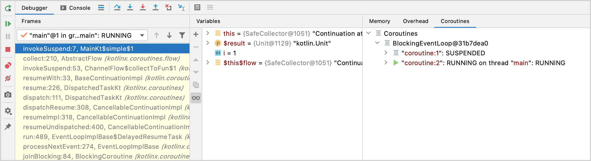
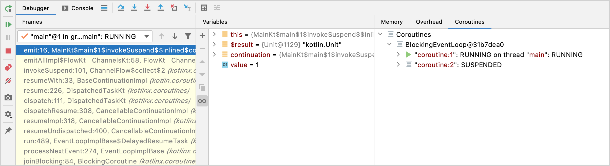

本教程演示如何创建 Kotlin Flow，并用 IntelliJ IDEA 调试它。
创建 Kotlin Flow
创建一条 Flow，让发射者和收集者的处理速度都比较慢。
在 IntelliJ IDEA 中打开 Kotlin 项目。如果还没有项目，先创建一个。
-
在 Gradle 项目中使用
kotlinx.coroutines，请在build.gradle(.kts)添加下列依赖。Kotlin
dependencies { implementation("org.jetbrains.kotlinx:kotlinx-coroutines-core:1.11.0") }Groovy
dependencies { implementation 'org.jetbrains.kotlinx:kotlinx-coroutines-core:1.11.0' }其他构建系统的说明见 kotlinx.coroutines README。
-
打开
src/main/kotlin目录中的Main.kt。src目录包含 Kotlin 源文件和资源。Main.kt中的示例代码会打印Hello World!。 -
创建
simple()函数，返回依次发出三个整数的流。import kotlinx.coroutines.* import kotlinx.coroutines.flow.* import kotlin.system.* fun simple(): Flow<Int> = flow { for (i in 1..3) { delay(100) emit(i) } } -
修改
main()函数中的代码。用 runBlocking() 块包住协程代码。
用 collect() 收集这些值。
用 delay() 模拟耗费 CPU 的代码所需的时间。协程挂起 300 毫秒，不会阻塞线程。
用 println() 打印从流中收集到的值。
fun main() = runBlocking { simple() .collect { value -> delay(300) println(value) } } -
点击 Build Project 构建代码。

调试协程
-
在调用
emit()的行上设置断点。
-
点击窗口顶部运行配置旁的 Debug，以调试模式运行代码。

Debug 工具窗口会出现。
Frames 标签页显示调用栈。
Variables 标签页显示当前上下文中的变量。从中可以看出，流正在发出第一个值。
Coroutines 标签页显示正在运行或挂起的协程。

-
在 Debug 工具窗口点击 Resume Program 继续执行。程序会再次停在同一断点。

此时流正在发出第二个值。

被优化掉的变量
使用挂起函数时，调试器有时会在变量名旁显示 was optimized out。

这意味着变量的存活期被缩短，此时变量已经不存在。由于看不到变量值，调试会变得困难。可以用编译器选项 -Xdebug 关闭这种优化。
添加一个并发运行的协程
打开
src/main/kotlin目录中的Main.kt。-
修改代码，让发射者与收集者并发运行。
加入 buffer() 调用，使发射和收集能并发执行。
buffer()保存已发出的值，让流的收集和发射分别在不同协程中进行。
fun main() = runBlocking<Unit> { simple() .buffer() .collect { value -> delay(300) println(value) } } 点击 Build Project 构建代码。
调试有两个协程的 Kotlin Flow
在
println(value)处设置一个新断点。-
点击窗口顶部运行配置旁的 Debug，以调试模式运行代码。

Debug 工具窗口会出现。
在 Coroutines 标签页里能看到两个并发协程。因为使用了
buffer()，收集者和发射者在不同的协程中执行，发出的值可以暂存在缓冲区里。图示时刻，发射协程为 RUNNING，收集协程为 SUSPENDED。 -
在 Debug 工具窗口点击 Resume Program，继续执行。

此时收集协程为 RUNNING，发射协程为 SUSPENDED。
可以继续深入查看每个协程，调试其中的代码。